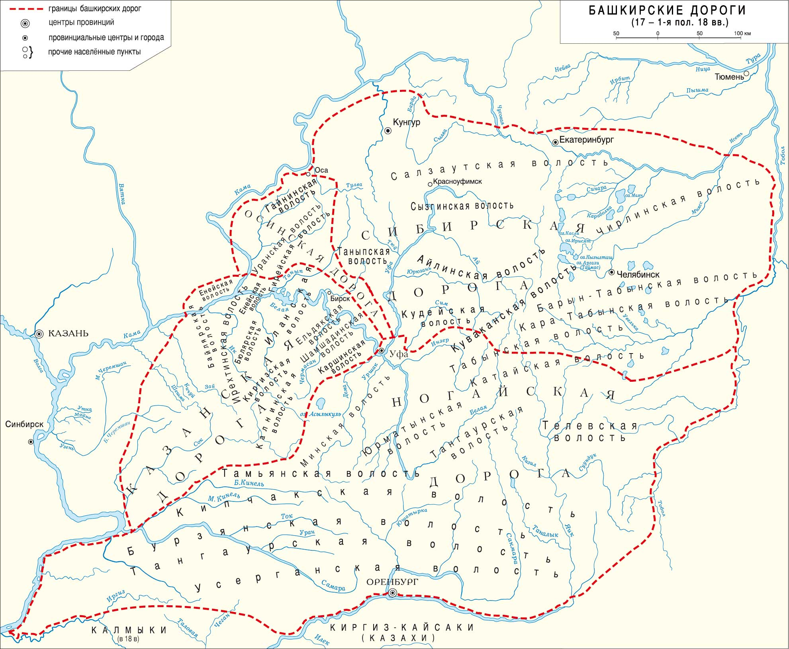
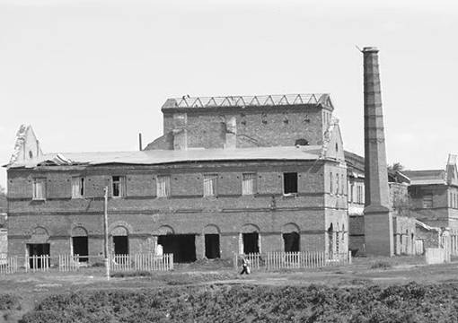

Административное деление. С начала XVI века Башкирия называлась Уфимским Уездом и состояла из четырёх дорог: Ногайской, Осинской, Сибирской и Казанской. Каждой дорогой, состоящей из объединённых башкирских племён, управлял старейшина, член курултая (башкирского правительства). Однако в 1708 году Уфимскую губернию включили в состав Казанской. В итоге башкирский край стал воеводством, а немного позже, в 1719 году, был переименован в провинцию.
Когда императрицей стала Екатерина Петровна, в Башкортстане начались новые изменения: 1744 году была образована Оренбургская губерния, в которую вошли Оренбургская, Уфимская и Иссетская (Зауральская часть Башкортстана, которая отделилась в 1737 году) провинции. А в 1781 году было сформировано Уфимское наместничество, которое вновь присоединилось к Оренбургской губернии.
Окончательным крупным изменением XVIII века стало введение в башкирском крае О. А. Игельстромом кантонного управления в 1798 году. Таким образом, все 4 дороги перестали функционировать, а на территории Уфимского наместничества было сформировано казачье войско, потому что в те годы Оренбургская губерния была южной границей России.
Кантонное управление заключалось в следующем: Уфимское наместничество делилось на 11 кантонов (юрты), которыми управляли башкирские старшины, теперь каждый мужчина в возрасте 18 лет был обязан нести 30-летнюю службу и участвовать в военных компаниях империи. Конечно же, многие не выдерживали изнурительных походов и, не дожив до конца службы, умирали; другие, пытающиеся уйти от военной повинности, были сурово наказаны; а те немногие, которые возращались домой, были далеко не молоды... Но кантонная служба в Башкирии была полностью внедренна лишь в начале следуюшего века.
Культура. Как мы знаем, в Древней Башкирии, территория которой была огромна, основным занятием народа было ведение кочевого скотоводства. Но к началу XVIII века мест для кочевания крупных табунов лошадей не осталось, теперь скотоводство постепенно уходило на второй план, уступая место земледелию. Нельзя сказать, что коневодство ушло в прошлое, башкиры в любом случае разводили лошадей, но уже не так активно.
На рубеже XVIII века башкирская культура переплеталась с русской, но при этом сохраняла свои традиции. Например, свой новый облик получили шежере (гомологическое дерево) и народный эпос. В литературе занял своё место народный герой Салават Юлаев: его стихотворения - основа башкирской поэзии. Немалый вклад в народную литературу внес Баик Айдар, ему пренадлежат такие произведения, как «Айтыш (состязание) Баик-сэсэна (Баик-сказатель) с казахским акыном (поэтом) Бухаром», «Обращение Баик-сэсэна к батыру Салавату», поэтическое обращение «К башкирским воинам-защитникам» и народные песни «Юрюзань», «Уҡтар аттым», «Песня Баик-сэсэна». Стоит отметить, что башкирская поэзия и проза отличалась вольным, свободолюбивым характером.
 Промышленность. В 1700 году в Башкортстане был построен первый горный завод «Каменский». Это стало началом горнодобывающей промышленности башкирского края. Уже в 1740 году в Уфимской провинции было 35 заводов, из них 18 медеплавильных, 10 железоделательных и 7 чугуноплавильных. Казёнными была 1/5 всех заводов (Саралинский, Кунгурский, Уфимский и др.), остальные были частными (Давыдовский, Анцубский, Суксунский и др.). Уже к 1770 годам численность всех заводов составила 100 предприятий. Но из-за последнего крестьянского восстания 1773-1775 годов было полностью разрушено около 25 фабрик, частичному разрушению подверглись 20 заводов. В итоге, ущерб составил более 2 млн. рублей.
XVIII век стал началом башкирской промышленности: было построенно более ста предприятий, обнаружено около 500 новых рудников и месторождений. К сожалению, строились заводы на вотчинной земле башкир, это обстоятельство не раз приводило к новым восстаниям и в последнем из них был нанесён огромный ущерб экономике Оренбургской губернии.